6.810 Engineering Interactive Technologies (fall 2020)
Inkjet Printed Sensors and Introduction to Processing
In lab 1 and lab 2, we are going to create the interactive music card shown below. Underneath the visual design, the music card has an inkjet printed circuit with touch buttons and sliders that allow the user to play songs and control the volume. The card is connected to a microcontroller for analyzing user input and then sends the signals to a program called Processing for visualizing user input on screen.
 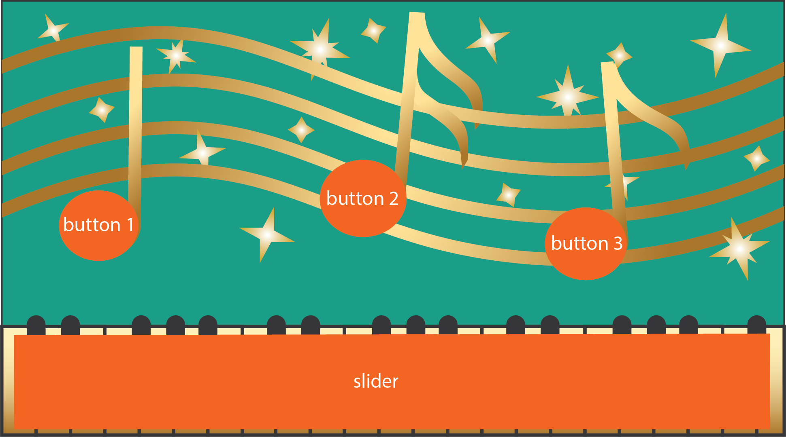
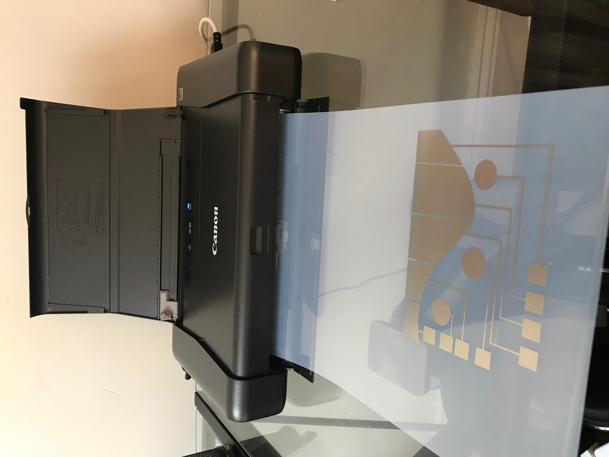
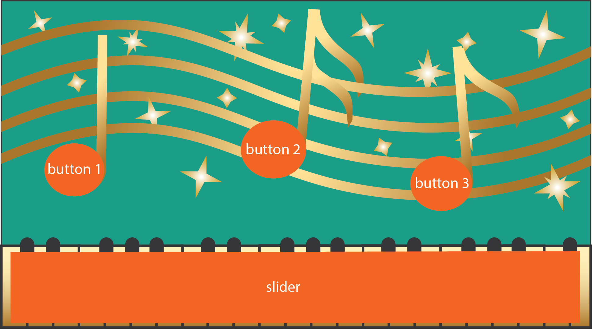
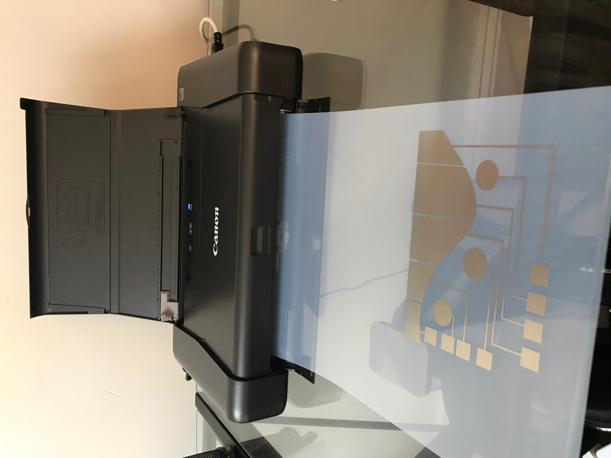
Your Task for Today: Circuit Design and Signal Processing
(1) Circuit Design: You will first draw the circuit design of your card by creating a 2D drawing of the wires and interactive touch and slider areas.
(2) Conductive Silver Inkjet Printing: Next, you will print your design with conductive inkjet printing.
(3) Wiring up the Buttons: In the next step, you will wire up your touch buttons using a breadboard and an ESP32 microcontroller.
(4) Sensing the Touch Signals: Next, you will sense the touch signals using capacitive touch sensing (through Arduino's CapacitiveSensor Library) and apply filtering to the signals.
(5) (next lab, not today) Visualizing User Input: We will then setup the touch buttons and sliders in a programming environment called Processing, which will visualize on screen when someone touches the touch buttons and sliders and will also play the corresponding songs from the music card.
(6) (next lab, not today) Wiring up and Visualizing the Slider: Finally, you will add the slider to your circuit and user interface and use it to control the music volume.
Deliverables Lab 1 (due Friday, Sept. 11, 2020, 11.59pm)
At the end of Lab 1, upload to your student google drive:
- the circuit drawing (.pdf file format) you used for conductive inkjet printing
- the Arduino code you wrote for Serial Communication (.ino file format)
(1) Circuit Design
Download and Open Visual Design File
To get started, download the visual design of our music card here.
Where to Add the Touch Button and Slider
For our interactive card, we want to add three touch buttons, one on each note (we will later use them to go to the next/previous song and pause/play the song).
In addition, the piano area should serve as a volume slider, i.e. if we drag our finger from left to right, the volume of the music that is playing will increase.
Draw the Touch Buttons and Their Wires
Touch-buttons consist of one shape + one wire.
One end of the wire connects to the touch button shape and the other end connects to a connector pad, which will in turn connect to the microcontroller.
We can later sense the user's touch using a principle called capacitive touch sensing, which as discussed in lecture requires only one electrode (i.e. the touch button) and the other electrode is your finger.
Below is the image from lecture as a reminder of how this works.

With your drawing program open, let's draw the touch buttons and their wires for each of the three notes.
While drawing, make sure you follow the specifications, which are:
Set Document Color Mode to CMYK: Since we will print our document later, please set the document color mode to CMYK (not RGB, which is for on-screen documents).
Set Units to mm: If your drawing is still set to 'pts' as a measurement unit, set it to mm or inch.
Color of Lines/Shapes: The color for all your circuit design should be set to black (CMYK: 0,0,0,255) since we will use the 'K' cartridge for printing the silver ink.
Create a New Layer: Make sure your circuit design is on a new separate layer than the existing visual design. Later we need to export two files seperately, the visual design in one pdf and the circuit design in a seperate pdf. Using a seperate layer for each allows you to turn each part of the design on/off quickly for export.
Area of Touch Button: A touch button should be large enough for a user's finger (size of a finger tip is an area around 2cm x 2cm). In the design we gave you, the size of each note body is roughly the size of a finger pad, so as long as you trace the note it should be fine.
Thickness of Wires: Your wires should be 1mm thick. Make sure to check this in your drawing program. We typically draw 'rectangles' for the wires rather than 'lines' since a rectangle allows us to see its 'width' in the shape properties. The thickness of the wire determines its conductivity (larger cross-section = hire conductivity), with 1mm we are on the safe side given the conductive ink we use and its resistance.
Connector Pads for Wires: One end of your wire connects to your touch button. The other end of your wire will connect to a connector pad which we will later use to connect to the ESP microcontroller. The connector pad for the microcontroller needs to be large enough to connect to a crocodile clamp. The connector pad should be 1cm x 1cm to be on the safe side. We recommend you route all your wires to the right side of the card and we will connect the microcontroller there. Make sure your connector pads are close enough to the border so that a crocodile clamp can reach it (see image below).
Left: connector pad not close enough to border, crocodile clamp can barely reach it. Right side: better.
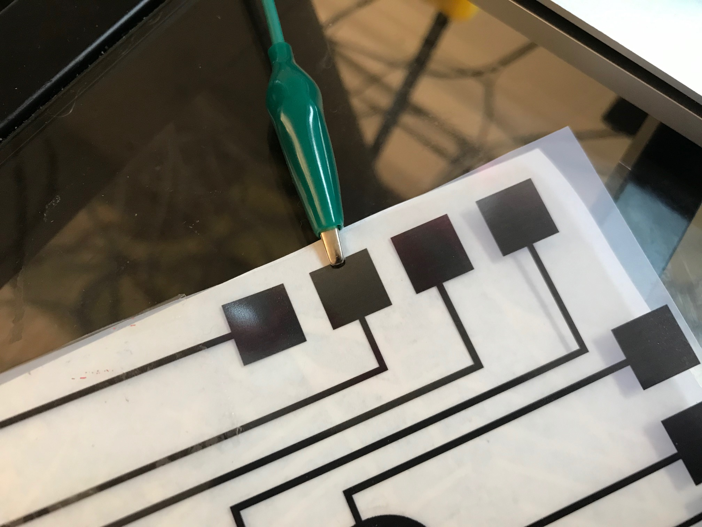
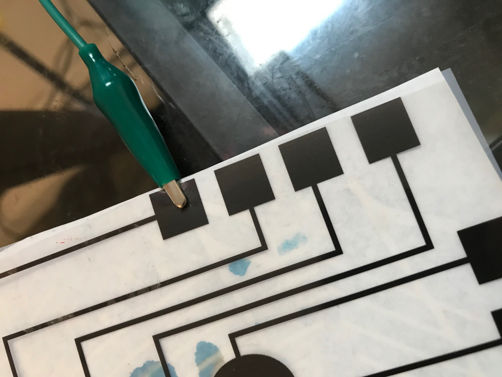
Draw the Touch Slider and the Corresponding Wires
Great, now that you have the three touch buttons of the notes connected, we can move on and draw the circuit for the slider.
Touch-sliders consist of multiple touch buttons linearly arranged, i.e. several segments and each segment has its own wire that connects to the micro-controller.
Discrete vs. Continous Sliders:
In the discrete slider design, the finger tends to be only over one of the slider segments.
In the continous design, the finger tends to touch two adjacent slider segments. By knowing how much the finger touches each slider segment, we can extrapolate a continous transitions between the segments.
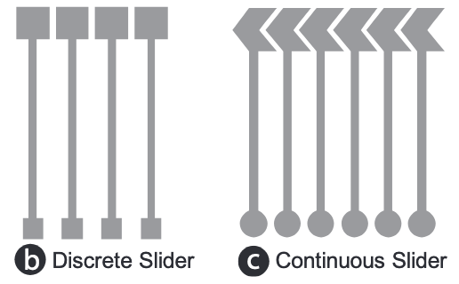
From the paper DuoSkin (ISWC 2016)
Type of Slider: We will create a continuous slider, i.e. the segments overlap.
Number of Slider Segments: We will create five slider segments that make up the slider. More slider segments allow for higher resolution, but also need more space for wiring, connector pads, and more input pins on the microcontroller. Below you see an image that already has two slider segments marked up, you need to divide the remaining 'piano' area to form another three slider segments and connect them via wires to some additional connector pads. When you draw your slider segments, pay close attention that each slider segment overlaps with each oder, i.e. you can see how the front of the first segment reaches deep into the second segment to maximize overlap.
Line Width, Connector Pad etc.: You need to follow the same specification as above, i.e. use the same wire thickness (1mm) and the same connector pad size (1cm x 1cm).
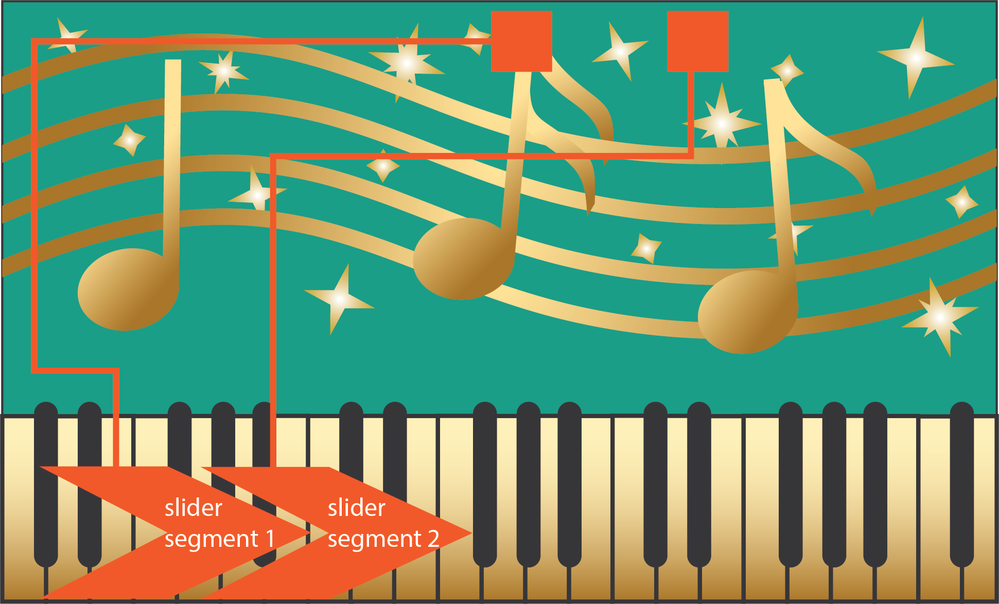
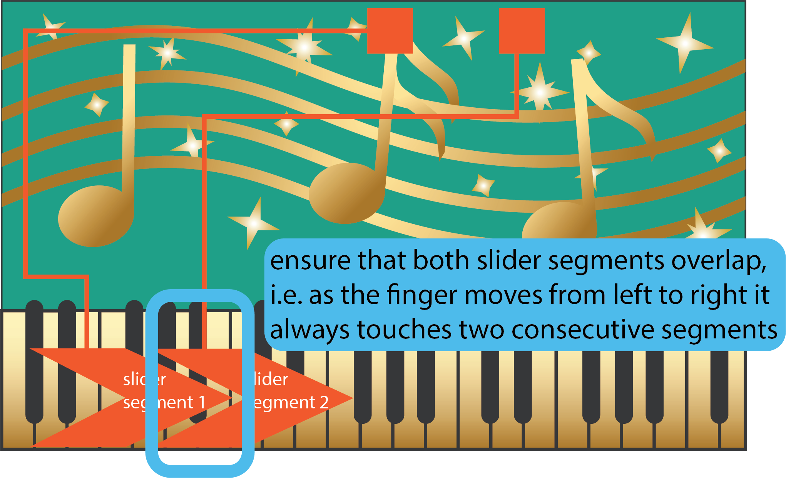
Check your Design Before Printing
Before printing, double check that all your circuit lines are pure black, i.e. CMY = 0 and K = 100.
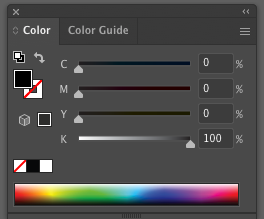
Also double check that your design has two separate layers:
Layer 1: visual design
Layer 2: circuit design
You need to be able to turn them on/off individually since we will print the circuit in a first pass, then reinsert the paper and then print the visual design on the other side of the paper. Printing on the same side of paper does not work since the visual ink is not able to cover up the silver. Also for capacitive touch sensing, we never want to touch the silver directly, so it is better to flip the paper and interact on the other side where the visual design was printed.
In order to accommodate the double-side printing, we will need to mirror one of the two layers otherwise if we flip the sheet for printing the second pass things will not align. To do this, first make sure that you place both the visual and circuit design at the center of sheet. Since mirroring the visual design would look weird, we will mirror the circuit design since it will be on the backside of the card after printing and thus doesn't impact the design. In Adobe Illustrator, to mirror the design, we will first select all objects in the circuit design layer, then go to Object --> Transform --> Reflect... , and select Vertical. If you use a different drawing program, please google to find out how to mirror your design.
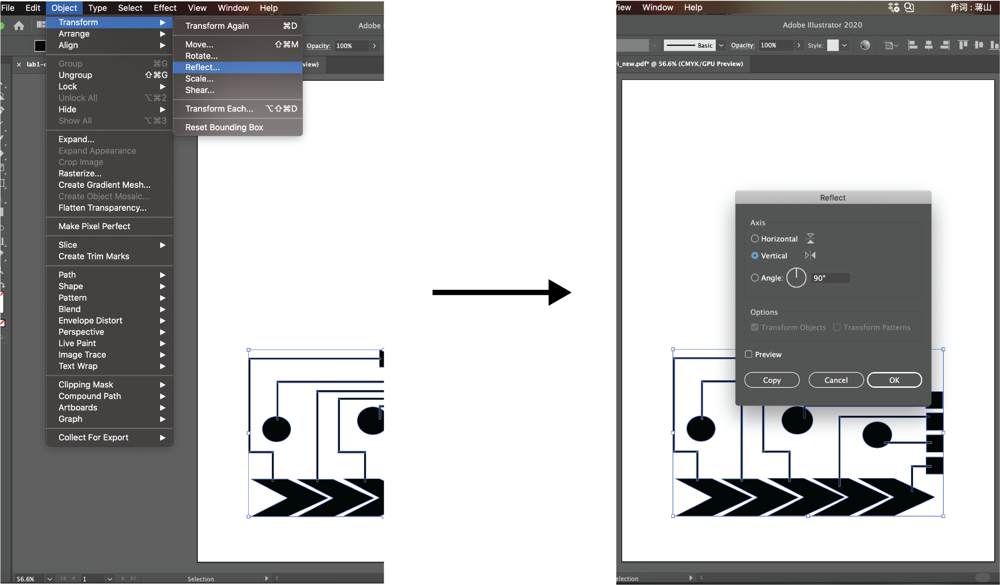
After mirroring, you should have something that looks like below.
Then you can go ahead and print them out one by one.
Left: Before mirroring, not ready to print. Right: After mirroring the circuit design, ready for printing!
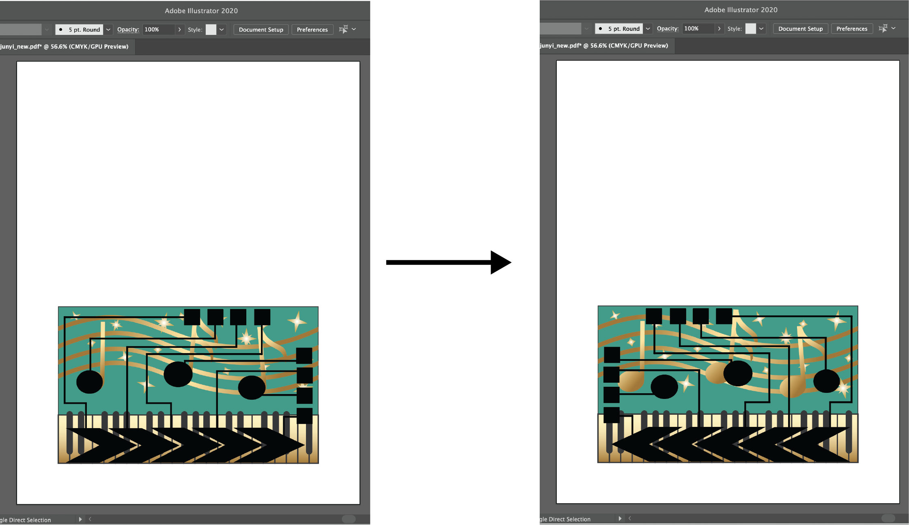
Once you have your design, add it to your student google drive folder as three pdfs (combined-visual-circuit.pdf with both layers, visual-design.pdf separate and circuit-design.pdf separate) and let us know on slack that you are ready to have your design checked by us.
Once you have our ok, please book an OH slot and come in to print.
You can either print from your own laptop or use the computer we have in the workshop.
If you want to print from your own laptop, please make sure you install the printer driver for the Canon PIXMA TR150 Printer and a second printer driver for the Epson EcoTank ET-2760.
(2) Conductive Silver Inkjet Printing
Theoretically, we can use a single printer to print both the circuit design and the visual design.
Since 2D printers have two cartridges, i.e. a CMY cartridge for color printing and a K-cartridge for black, we can simply empty the K-catridge and fill it with silver ink.
So anything in your drawing that is 'K' (pure black) will be printed in silver and the rest will be printed from the regular CMY cartridge.
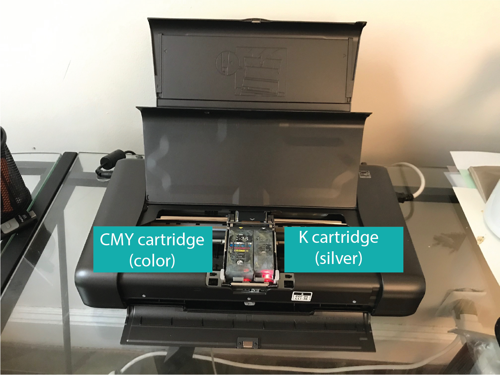

For our class, however, we are using two 2D inkjet printers, one for the circuit printing and one for the visual design.
The reason for this is that the printer drivers of our inkjet printers do not support printing 'with only the CMY cartridge' (Stefanie: do you mean with only 'K'?), they will always use the K-cartridge (Stefanie: CMY?) as well for part of the print.
Therefore, we use two printers: In one printer, we use the CMY cartridge as original intended for color printing. In the other printer, we empty the CMY cartridge and replace it with silver ink. The "K" (Black) cartridge remains in its original form, i.e. contains black ink.
Buying Materials and Preparing the Printer
While we have already done this for you, we provide you here with the details in case you want to try this yourself in the future:
2D Printer: For the class, we are using the Canon PIXMA TR150 Printer for the silver inkjet printing, and the Epson EcoTank ET-2760 All-in-One Supertank Printer for normal color printing. Both printers work for silver inkjet printing (other 2D printers may work as well but it depends on their nozzle diameter and print head type, i.e. the silver may clogg them if they are too small. Also note that the print head should be a piezoelectric print head.
Silver Ink: We bought cartridges for Canon PIXMA TR150 (same cartridges as Canon PIXMA IP110) from here, and separately bought silver ink from Mitsubishi. Before filling the silver ink, we cut open the cartridge, washed it clean, dried it up, then re-assembled it back. If you want to use the Epson EcoTank ET-2760 Printer for silver ink printing, you don't need additional cartridges, and you can directly fill the silver ink into its build-in cartridges.
Syringe: To fill the silver into the cartridge, you need a syringe. We bought syringes from here
Paper: With the silver ink we use, we cannot print on any paper but need a special sheet, which chemically sinters the silver ink once it adheres to the sheet. We use the following sheets: Mitsubishi PET films and Kodak glossy photo paper.
Drying out: Note that if the silver is too long in the cartridge, it will eventually dry out and not print anymore.
Print Settings for Printing Silver
As mentioned before, we will be printing the design files on 2 sides of the same photo paper sheet.
We will start with printing the silver.
If you want to print from your own laptop, please make sure you install the printer driver for the Canon PIXMA TR150 Printer (for silver) installed.
Plug in the Canon Pixma printer and open your Circuit Design File.
Go to print, and from the 'Printer' dropdown select the 'Canon iP110 series'.

Next, click 'setup' (bottom left corner), then 'continue'.
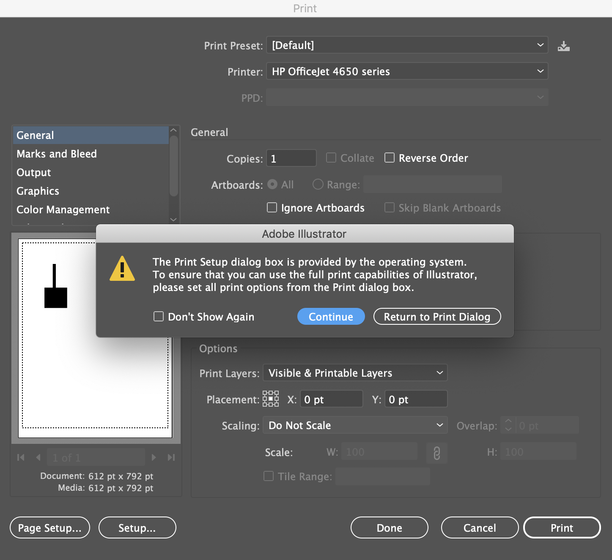
Go to 'Quality and Media' in the dropdown, then select 'Media Type' and 'Photo paper' and 'Photo Paper Plus Glossy 2'.
Whenever we select the 'Glossy Paper' setting, the printer will automatically only use the CMY cartridge and will not use the K cartridge, which is exactly what we want.
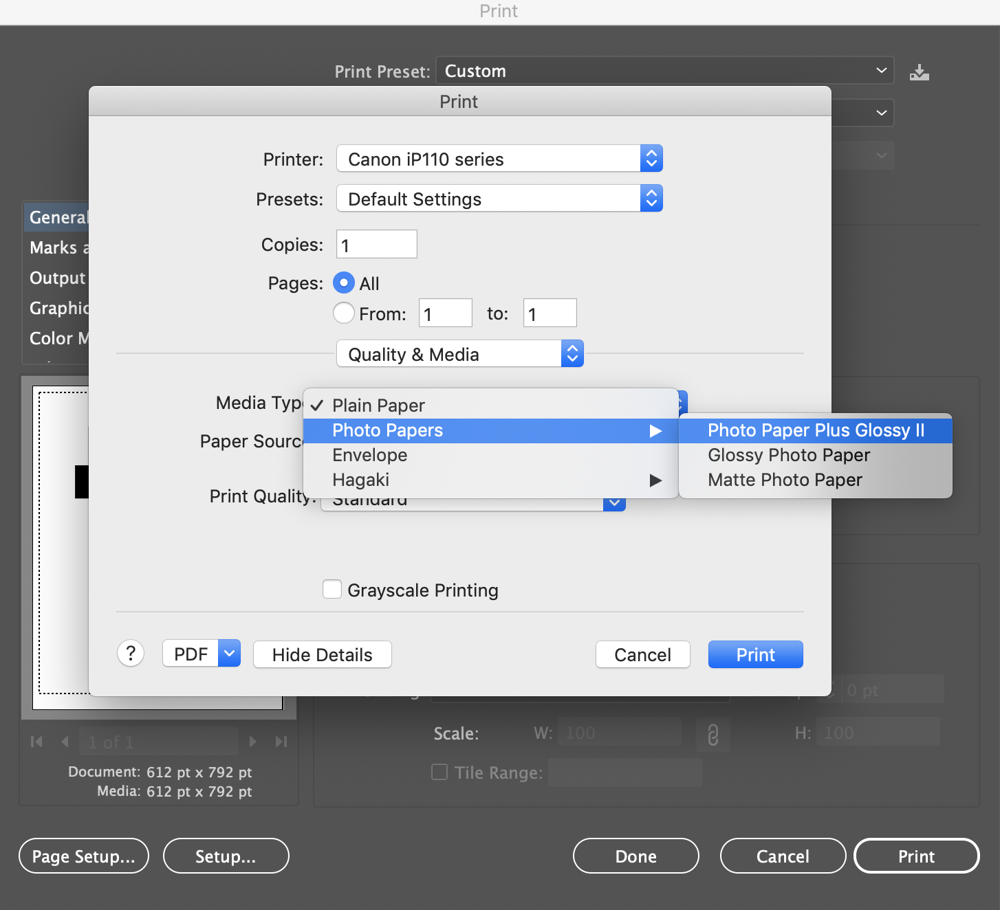
Then go to 'Print Quality' and select 'Custom' and put the resolution to the highest 'Fine' setting.


Next, insert the paper.
The paper has two sides, a sticky side and a non-sticky side.
The sticky side should be facing up.
If you are not sure which side is which, you can lick your finger and touch each side of the paper in the corner. The sticky side will have a white shine and the other side will show nothing. So the white shiny side should be facing up.
 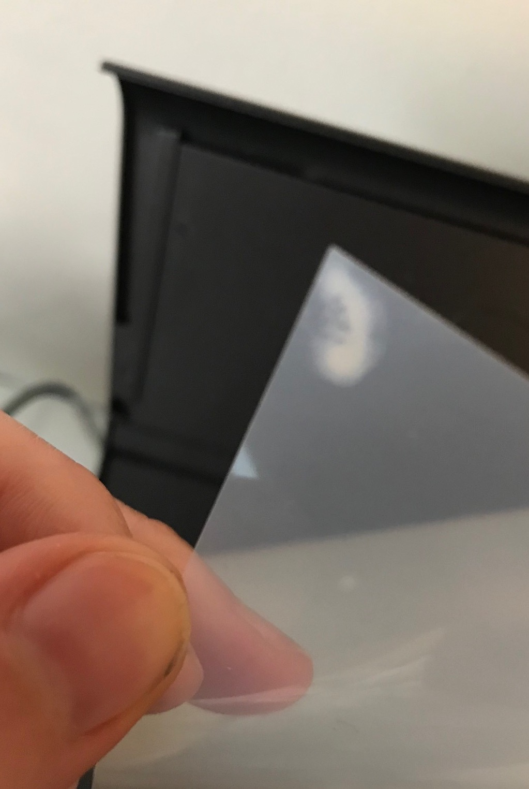
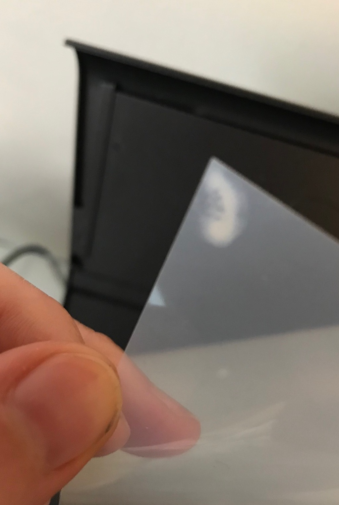
Now you are ready to hit the print button.
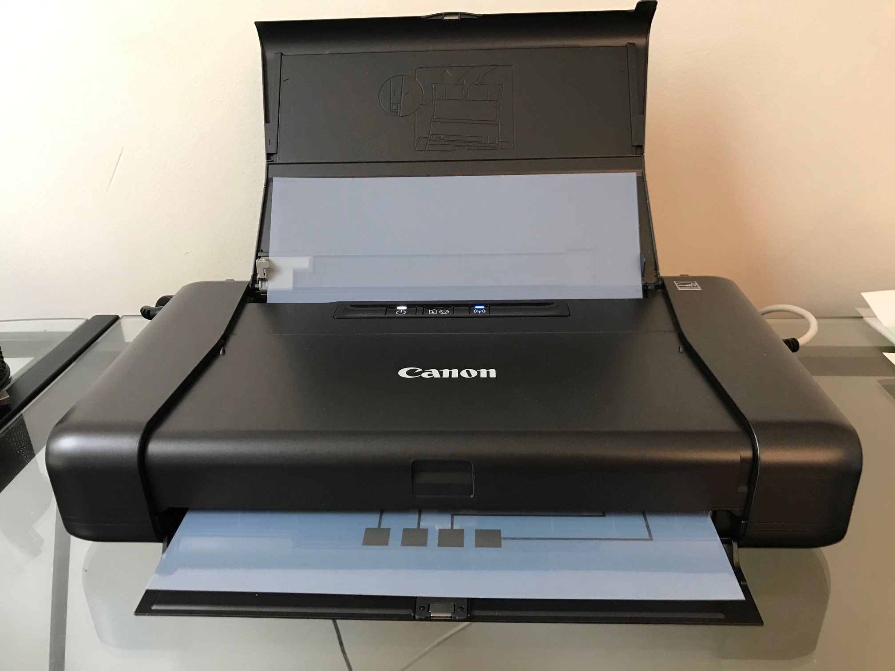
The newly printed silver ink sometimes can be scraped off by your finger if you got sweaty hands, this is because the silver ink has not been fully cured and it would not be an issue after a few hours. In order to prevent that, we recommand that you handle the newly printed silver circuits with the powder free disposable gloves on (we will give you some when you come in for printing). We will also provide you with one ZipLoc bag to put your printed silver circuit in so that it does not get scraped off during transportation.
Test with a Multi-Meter if your Silver Print is Conductive
Before we print the color layer, let's first check if the silver layer is conductive or if anything went wrong during the print.
Sometimes print nozzles clog and then some silver particles cannot exit through the nozzle, which leaves small gaps in your printed area, which reduce conductivity.
The print is successful, i.e. highly conductive and resistance low, if silver was deposited over the entire area.
The print was unsucessful if there are many tiny gaps, i.e. conductance will be low and resistance high.
Resistance is also influenced by the length of the wire and its thickness as mentioned above.
A thicker wire allows the current to flow better and thus leads to higher conductivity.
A longer trace accumulates resistance on its path therefore has lower conductivity (higher resistance).
To check the resistance, we can use a Digital multimeter (DMM).
To use the multi-meter, first set it to 'resistance' mode.

Next, set the sensitivity to the highest by pressing the 'range' button a bunch of times until the dot is at the front.
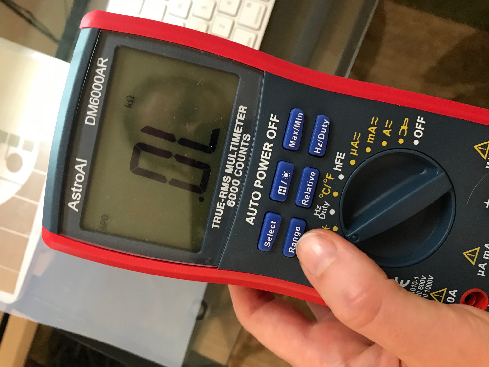
Next, hold the two measurement points at the beginning and end of a wire to measure the resistance along the trace.
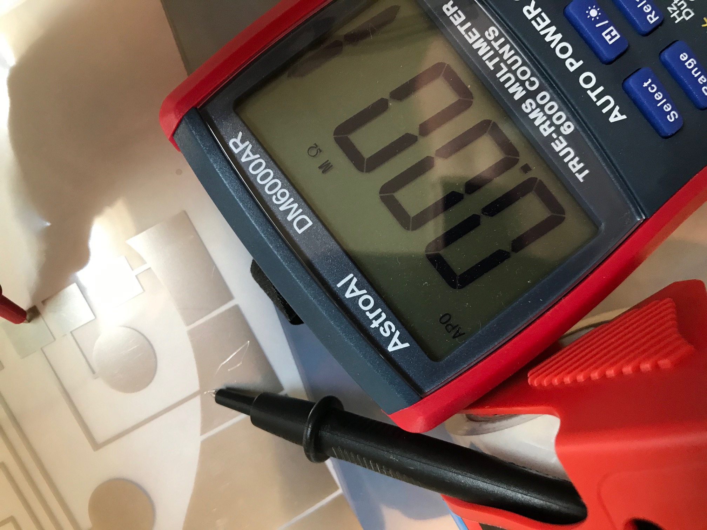
Here we have a fantastically low resistance of 1ohm.
If you see a 'OL' message in the display, your trace is broken and the resistance was so high it couldn't be displayed because it was out of range.
If that happens to you, let us know and we will print your design again.
Print Settings for Printing Color
Plug in the Epson EcoTank ET-2760 printer (used for visual design) and open your Visual Design File.
We will print the music card design on the back side of the printed silver circuit.
Make sure that you flip the photo paper with correct rotation so that the music card visual design and the circuit design matches up. Please add a photo Junyi.
Repeat the steps from above, i.e. choose all the same print settings.
Once you have the visual design printed on the back side it should look like this.
Front and back:
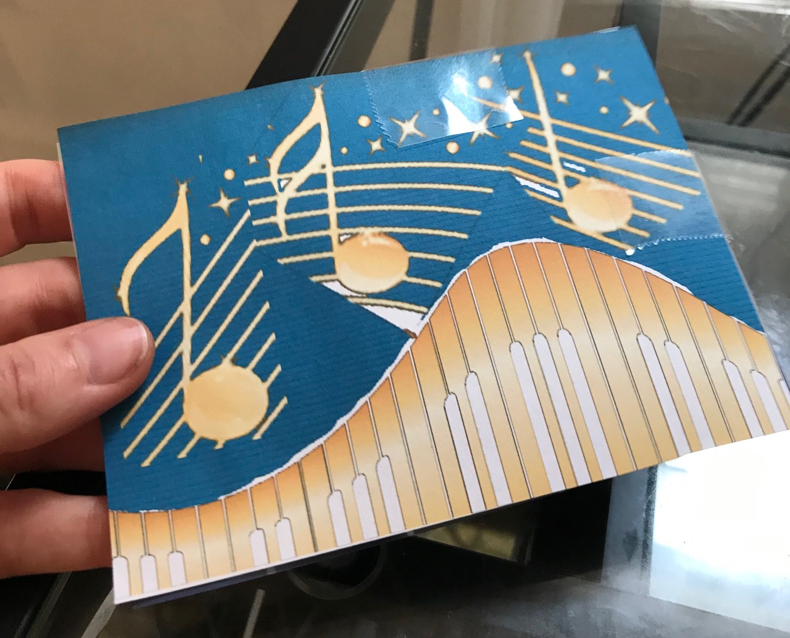
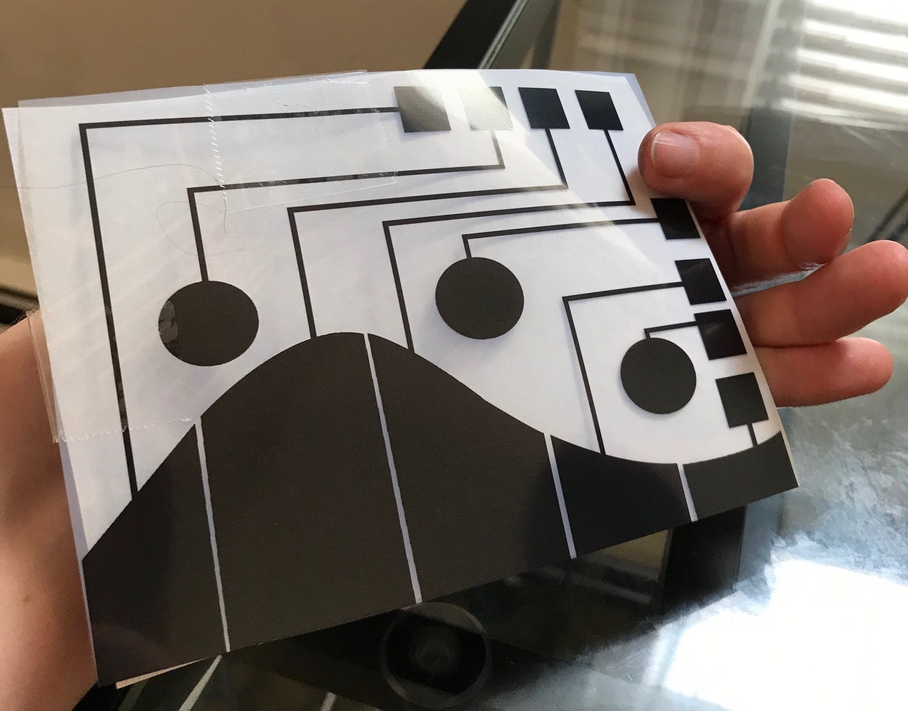
(3) Wiring Up the Button
ESP Micro-Controller
We will use the ESP32 micro-controller in this course to control the printed sensors and displays (same as in 6.08). Here is the pin out again for your reference.

If you study the reference sheet closely, you will notice that there are some pins that labelled with "TOUCH". They are optimized to serve as receivers for capacitive sensing therefore return more clean signals, so we will use them for our sensing application.
However, do not use the one pin labeled as pin0 (TOUCH1) as receiver at any time, as the pin is not configured correctly on this version of ESP32 board and will significantly slow down the signal recording. However, you can still use the pin as a sender.
Setting up the ESP Microcontroller
If you did your homework, you should already be all set.
If for whatever reason you were not able to do it yet, you can find the install instructions here.
Connecting your Printed Circuit to a Breadboard and to the ESP
We will use crocodile clamps to connect the touch buttons and slider segments to a breadboard.
One side of the crocodile clamp goes onto the connector pad of each touch button and slider segment.
The other side should clip onto the end of a regular breadboard wire.
The regular breadboard wire can then be used to connect to the breadboard.
From there you can do your normal breadboarding to connect to the ESP.
To get started, use the first crocodile clamp and connect it to the card and a wire for breadboarding.
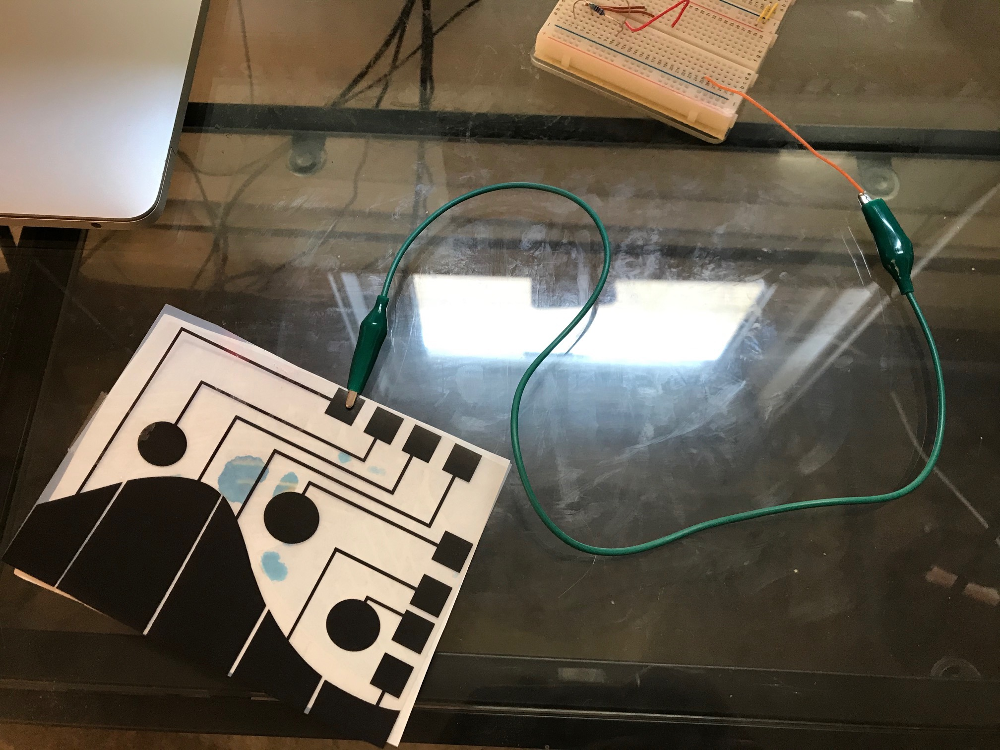
Build Circuit for Touch Sensing
We will implement touch sensing based on the principle of capacitive touch sensing.
The circuit for capacitive touch sensing requires a sender pin, which outputs a signal, and a receiver pin, which listens to the signal. The conductive touch buttons and slider segments are connected between the sender and receiver pin, i.e. when a user touches the touch button, the signal will change and thus the receiver pin will receive a different signal, which we can further analyze in our code. The circuit also requires a resistor.

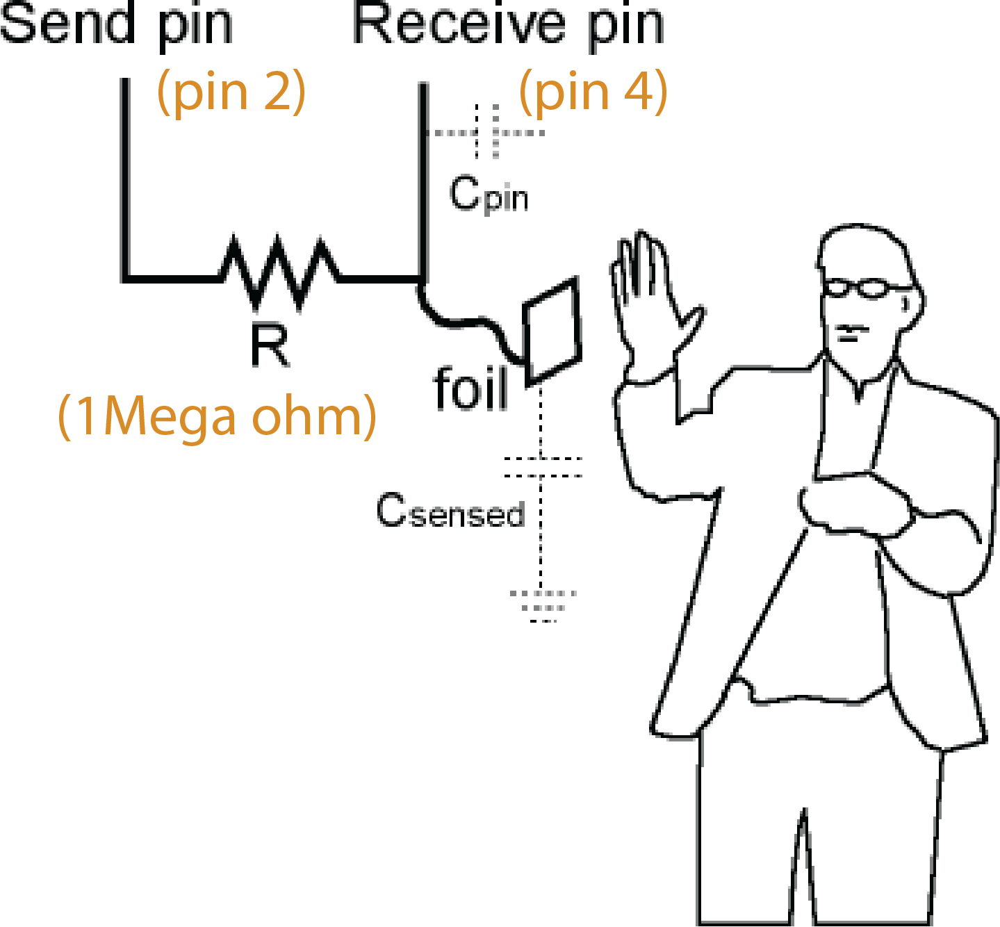
Let's put this into practice and create our first touch button circuit.
We will use pin 2 as the sender and pin 4 as the receiver (see image).
You can of course use other pins as well but let's stick with 2 and 4 for this example.
We will use one 100k Ohm resistor.
(4) Sensing the Touch Signals
Install Arduino Capacitive Sensing Library
Next, we will write a program that receives the touch sensor signal and plots them on our computer.
To process the sensor signals, we will use the CapacitiveSensor library.
To install it it, go to Sketch -> Include Library -> Manage Libraries and search for the CapacitiveSensor library and install it.

If the installed library does not work for you and returns an error message like "'XXX' does not name a type" upon compiling, remove it and we will install it a different way. You can remove the previously installed library: on Mac this is under Macintosh HD/Users/your-username/Documents/Arduino/libraries and on windows this is under My Documents\Arduino\libraries\ ).
Once the library is deleted, go to the library's GitHub repository and download it as a .zip file. Re-install the library via the .zip file. The instructions to do so can be found here.
Write Code to Read Touch Signal
The basic program below can read one touch sensor and send it to Arduino's serial monitor.
You can download this starter code here or alternative you can copy paste from this website.
/*******************************************************************************
* Capacitive Sensing for Touch and Proximity
*
* Prints the values of a capacitive sensor.
*
*******************************************************************************/
#include <CapacitiveSensor.h>
double analog_touch;
int sender = 2;
int touch_pin_1 = 4;
int samples_touch = 10;
CapacitiveSensor sensor1 = CapacitiveSensor(sender, touch_pin_1);
void setup()
{
Serial.begin(9600);
}
void loop()
{
// Send value 1
analog_touch = sensor1.capacitiveSensor(samples_touch);
Serial.println(analog_touch);
delay(10);
}
Open the code in your Arduino IDE and upload it to your microcontroller.
Open the serial monitor, you should see a bunch of numbers fly by.
If you touch your touch sensor, the values should change significantly.
Remember to not touch the silver side directly but to interact on the side of the visual design, i.e. the side that has no silver.
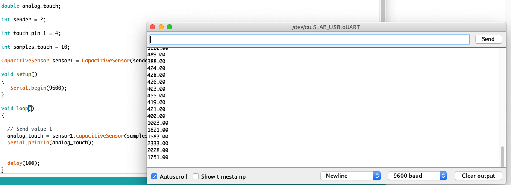
Extend Circuit to all Three Touch Sensors
Since we have three notes that serve as touch buttons, we need to both extend our circuit as well as our code to read those touch signals as well.
Use a breadboard to make 3 touch button circuits, each connecting to one of the notes.
Note that you can use the same sender pin for all three touch buttons.
Only the receiver pin has to vary, i.e. you need one receiver pin for each touch signal you want to read.
Also each touch sensor needs its own 100k Ohm resistor.
Choose any suitable receiver pin number you like.
Extend Code to all Three Touch Sensors
Next, extend your code to read and print all 3 of your touch sensors.
When you print your touch values, please use Serial.print() not Serial.println().
Each value should be seperated by a tabulator symbol Serial.print(","); and the line should finish with a new line Serial.print("\n").
Plotting Signals on the Serial Plotter
Next, we will use the Serial plotter to visualize the received signals by clicking on Tools->Serial Plotter.
Because of the formatting we used (comma seperated using Serial.print()), we can see all three variables plotted at the same time.
Try touching the sensors and see how the signal changes when you touch the sensors.
Below you see how we touch the button 1 first, then button 2 and finally button 3.
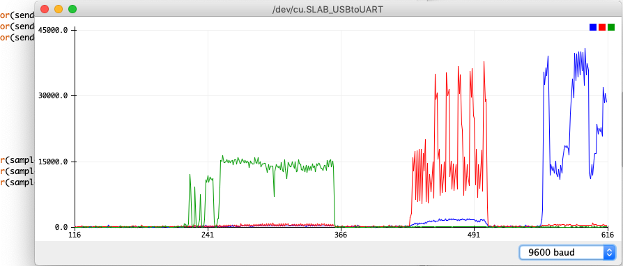
Also change the values of samples_touch in your code and see how the value range changes.
Below are two examples with higher numbers for samples_touch.
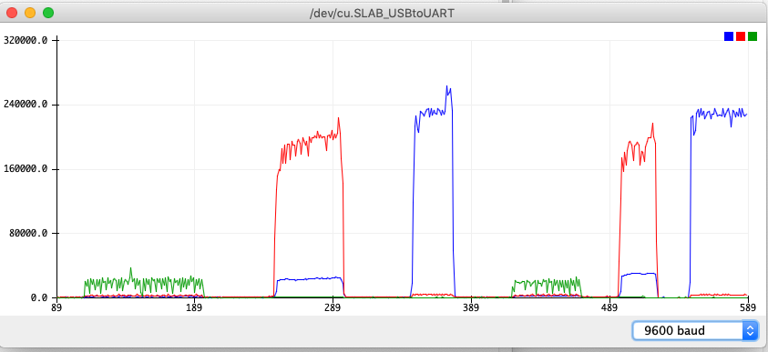

Thresholding Touch Signals: Touched or not Touched?
Next, we want to rewrite our code so to not return the raw signal values but to return if a button was touched or not touched.
For each sensor, we want to reformat our output so that:
(sensor ID),(is_touched);
(sensor ID) is either 0, 1 or 2 and represents the ID of the observed touch sensor.
(is_touched) is either 0 or 1 (0 if the sensor is not touched, and 1 if it is touched).
A sample output for touching only sensor 0 should look like:
0,1;
1,0;
2,0;
The sensor ID is easy to plot, but how do we know if the sensor is touched or not?
As you saw in the serial plotter, the values for each sensor can vary pretty wildly as mentioned in lecture.
We will do more filtering of signals later, for now you can use a simple if/then statement and make a rough estimate in which range your sensor signal falls for each touch button (look at the serial plotter for some help in determining the range).
Rewrite the code such that it iterates over all sensors and outputs every 200ms the correct output (see sample output above again for correct formatting).
We are still writing to the Serial Monitor, so use strings for your numbers.
Print Serial Messages only when Button State Changes
So far we have been printing all touch button values to the Serial monitor no matter if the state of the touch button changed or not.
Next, we want to print new information only if the sensor state changes, i.e. a touch button was not touched before but is now being touched, or the touch button was touched but the user just released the finger.
Change the code such that it tracks in which state each sensors is currently in.
Check for a state change and send the Serial message only then.
Example:
If sensor 0 gets touched, this message is printed once:
0,1;
Then when the user lifts the finger again, this message is printed once:
0,0;
Serial Communication to Send Touch Signals to Processing
Let's zoom out for a moment.
What we have done so far is that we have written a program for our microcontroller in the Arduino Programming Environment.
We have then uploaded that program onto our ESP microcontroller.
The microcontroller is constantly running our program on its built-in processor going through the loop() function, reading the sensor signals and thresholding them.
It then communicates the sensor signals in the format we defined back to our laptop using Serial communication through the USB cable.
So far, we have only used the Arduino IDE to 'listen' to the Serial communication from the USB cable and to show the values in the Serial Monitor or the Serial Plotter.
However, since any software can listen to the Serial Communication, we can also write programs in other programming languages and IDEs to read and do something with the sensor signals.
In the next lab, we are going to write a program in Processing.
Processing is a programming environment that makes it very easy to built on-screen UIs.
For our purposes, we will build a digital version of our music card that will highlight the corresponding areas on the card when you push the button on the physical card and will also play the corresponding song.
Deliverables Lab 1 (due Friday, Sept. 11, 2020, 11.59pm)
Upload to your student google drive:
- the circuit drawing (.pdf file format) you used for conductive inkjet printing
- the Arduino code you wrote for Serial Communication (.ino file format)
/*******************************************************************************
* Capacitive Sensing for Touch and Proximity
*
* Prints the values of a capacitive sensor.
*
*******************************************************************************/
#include <CapacitiveSensor.h>
double analog_touch;
int sender = 2;
int touch_pin_1 = 4;
int samples_touch = 10;
CapacitiveSensor sensor1 = CapacitiveSensor(sender, touch_pin_1);
void setup()
{
Serial.begin(9600);
}
void loop()
{
// Send value 1
analog_touch = sensor1.capacitiveSensor(samples_touch);
Serial.println(analog_touch);
delay(10);
}
0,1;
1,0;
2,0;
0,1;0,0;